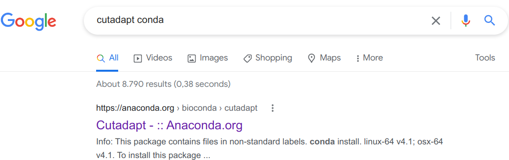
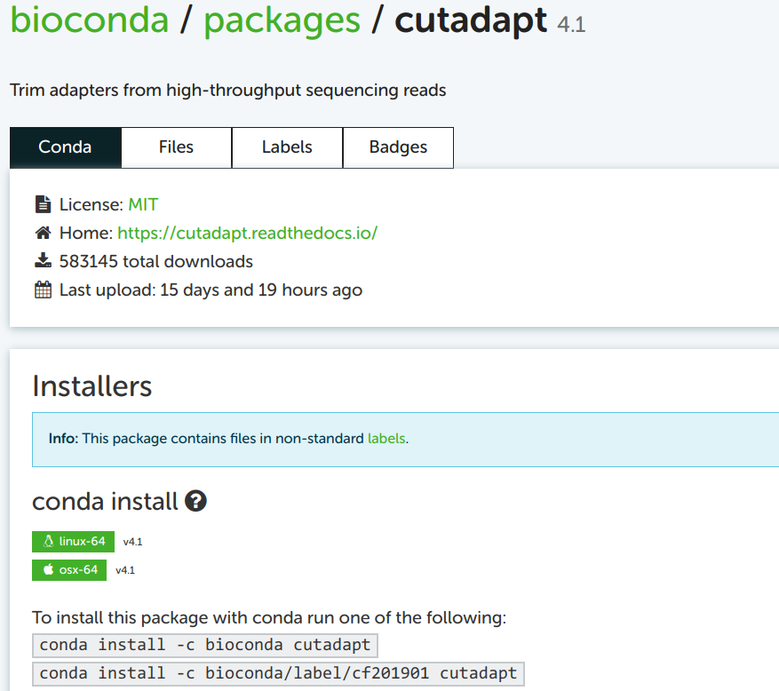
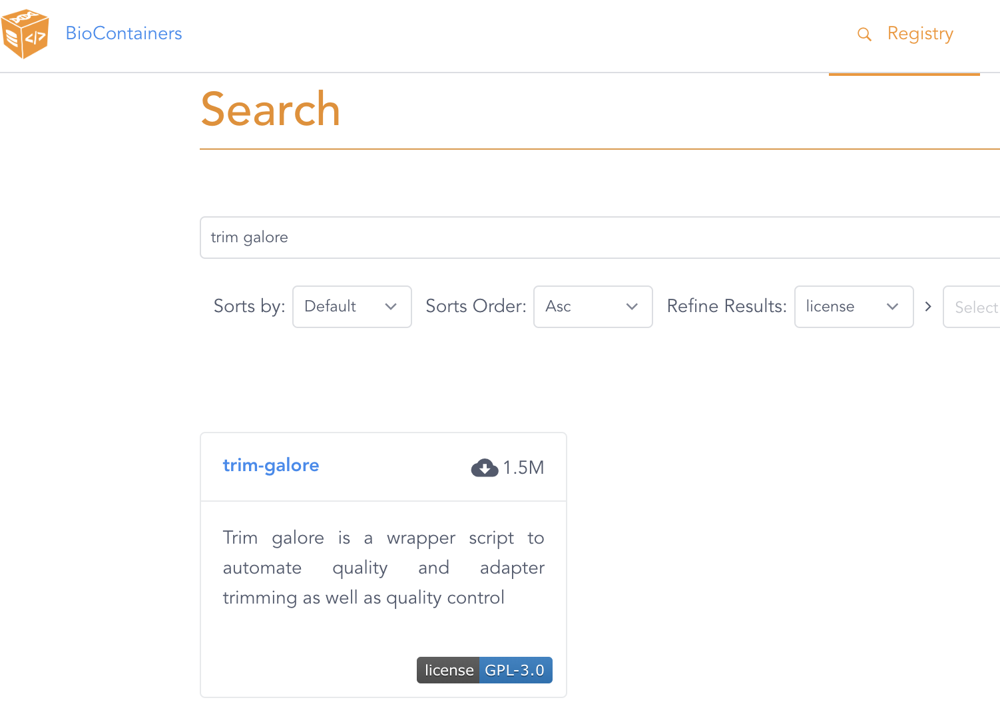
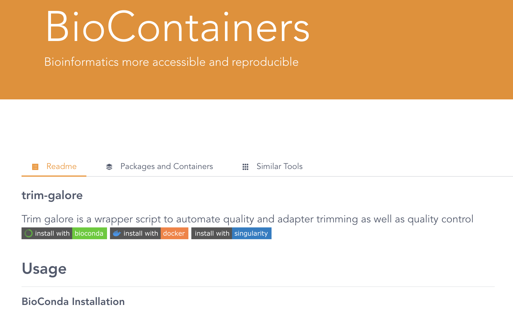
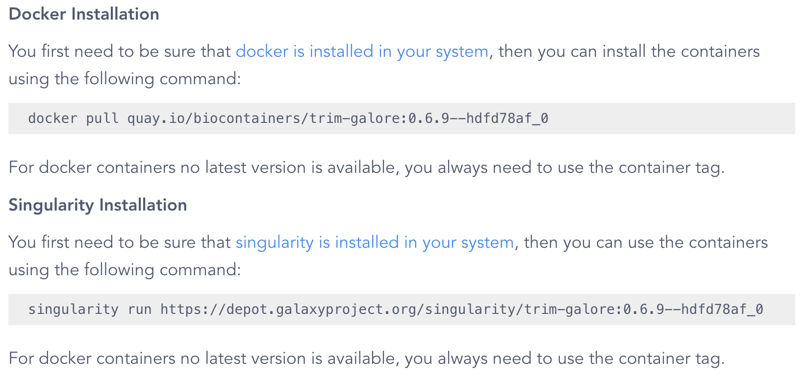
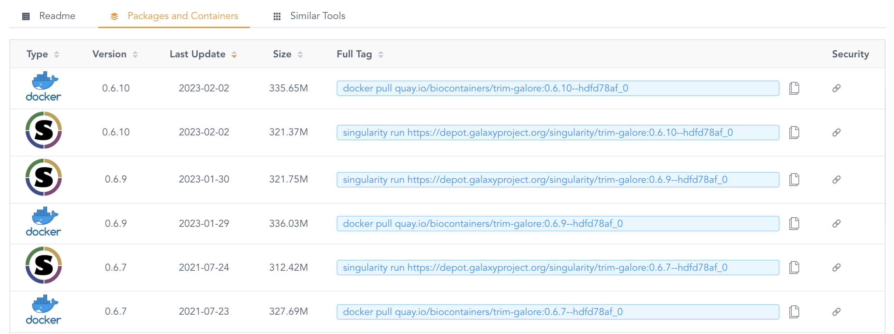

Using software at OSC
Overview
To analyze omics data sets, especially in genomics and transcriptomics, a typical workflow includes using a sequence of specialized bioinformatics software/programs/tools (I will use these terms interchangeably).
At OSC, there are system-wide installations of a number of bioinformatics programs. We do need to “load” such programs before we can use them1. We will talk more about this process today.
However, OSC’s collection of bioinformatics programs is not comprehensive, and their versions are sometimes outdated. We therefore need an additional way to use bioinformatics programs at OSC. Two common ones are the Conda software management program, which we’ll talk about today, and containers, which are discussed in the self-study material at the bottom of the page.
1 Loading software at OSC with Lmod modules
OSC administrators manage software with the “Lmod” system of software modules. For us users, this means that even though a lot of software is installed, most of it can only be used after we explicitly load it. That may seem like a drag, but on the upside, this practice enables the use of different versions of the same software, and of mutually incompatible software on a single system.
We can load, unload, and search for available software modules using the module command and its sub-commands.
1.1 Checking whether a program is available
The OSC website has a list of installed software. You can also search for available software in the shell using two subtly different module commands:
module spiderlists all installed modules.module availlists modules that can be directly loaded given the current environment (i.e., taking into account which other software has been loaded).
Simply running module spider or module avail spits out complete lists of installed/available programs — it is more useful to add a search term as an argument. Below, we’ll search for the Conda distribution “miniconda”:
module spider miniconda-------------------------------------------------------------------------------------------------------------------------------------------------------------------------------------------------------------------------------
miniconda3:
-------------------------------------------------------------------------------------------------------------------------------------------------------------------------------------------------------------------------------
Versions:
miniconda3/4.10.3-py37
miniconda3/4.12.0-py38
miniconda3/4.12.0-py39
miniconda3/23.3.1-py310
-------------------------------------------------------------------------------------------------------------------------------------------------------------------------------------------------------------------------------
For detailed information about a specific "miniconda3" module (including how to load the modules) use the module's full name.
For example:
$ module spider miniconda3/4.12.0-py39
-------------------------------------------------------------------------------------------------------------------------------------------------------------------------------------------------------------------------------module avail miniconda------------------------------------------------------------------------------------------------------ /apps/lmodfiles/Core -------------------------------------------------------------------------------------------------------
miniconda3/4.10.3-py37 (D) miniconda3/4.12.0-py38 miniconda3/4.12.0-py39 miniconda3/23.3.1-py310
Where:
D: Default ModuleAs stated at the bottom of the output below, the (D) in the module avail output above marks the default version of the program: this is the version of the program that will be loaded if we don’t specify a version ourselves (see examples below). The module spider command does not provide this information.
module load (below) is not
1.2 Loading and unloading software
All other Lmod software functionality is also accessed using module commands. For instance, to make a program available to you, use the load command:
# Load a module:
module load miniconda3 # Load the default version
module load miniconda3/23.3.1-py310 # Load a specific versionThis is especially true inside a shell script — when using the module load command, specifying a version would:
- Ensure that when you run the same script a year later, the same version would be used (assuming it hasn’t been removed) — otherwise, it’s possible a newer version would has been installed in the meantime, which might produce different results.
- Make it easy to see which version you used, which is something you typically want to know and report in your paper.
Module loading does not persist across shell sessions. Whenever you get a fresh shell session (including but not limited to after logging into OSC again), you will have to reload any modules you want to use!
To check which modules are loaded, use module list. Its output also includes automatically loaded modules — for example, after loading miniconda3/23.3.1-py310, it should list miniconda3 as the 9th entry2:
module listCurrently Loaded Modules:
1) xalt/latest 3) intel/19.0.5 5) modules/sp2020 7) git/2.18.0 9) miniconda3/23.3.1-py310
2) gcc-compatibility/8.4.0 4) mvapich2/2.3.3 6) project/ondemand 8) app_code_server/4.8.3Occasionally, when you run into conflicting (mutually incompatible) modules, it can be useful to unload modules, which you can do with module unload or module purge:
module unload miniconda3 # Unload a specific module
module purge # Unload all modulesmodule load command in your shell script
When you run a program that is loaded with Lmod in your shell script, always include the module load command in the script, and it is best to do so way at the top of the script:
#!/bin/bash
set -euo pipefail
# Load software
module load fastqc/0.11.8Exercise: Load a BLAST module
BLAST is a very widely used alignment tool, often used to identify sequences that are similar to a query sequence. There is not just a web version on NCBI’s website, but also a BLAST command-line tool.
Use
module availto check if BLAST is installed at OSC, and if so, which versions. (Note: you’ll also see results for the related moduleblast-database— ignore those.)Load the default BLAST version by not specifying a version, and then check which version was loaded and if that matches the
module availoutput.Load the latest version of BLAST without unloading the earlier version first. What output do you get?
Click here for the solutions
Check the BLAST modules:
module avail BLAST---------------------------------------------------------------------------------- /apps/lmodfiles/Core -- -------------------------------------------------------------------------------- blast-database/2018-08 (D) blast-database/2020-04 blast-database/2022-06 blast/2.8.0+ blast/2.11.0+ blast-database/2019-09 blast-database/2021-05 blast-database/2023-06 blast/2.10.0+ (D) blast/2.13.0+ Where: D: Default ModuleLoad the default version:
module load BLAST module listCurrently Loaded Modules: 1) xalt/latest 3) intel/19.0.5 5) modules/sp2020 7) git/2.18.0 9) miniconda3/23.3.1-py310 2) gcc-compatibility/8.4.0 4) mvapich2/2.3.3 6) project/ondemand 8) app_code_server/4.8.3 10) blast/2.10.0+blast/2.10.0+was loaded, which matches whatmodule availclaimed with its(D)marker for the default version.Load the latest version:
module load blast/2.13.0+The following have been reloaded with a version change: 1) blast/2.10.0+ => blast/2.13.0+Lmod detected that you tried to load a different version of a software that was already loaded, so it changes the version and tells you about it.
Bonus exercise: STAR and module availability
Use
module spiderto check which versions of STAR, an RNA-seq read alignment program, have been installed at OSC. Compare this output with that ofmodule avail.Try to load the most recent version of STAR that
module spiderlisted (this should fail).Follow the instructions in the error message to again try and load OSC’s most recent version of STAR.
Search the internet to see what the most recent version of STAR is.
Click here for the solutions
Check the versions of STAR — it looks like
2.7.9ais installed but we can’t load it for some reason:module spider star-------------------------------------------------------------------------------------------------------------------------------- ------------------------------------------------------ star: -------------------------------------------------------------------------------------------------------------------------------- ------------------------------------------------------ Versions: star/2.5.2a star/2.7.9amodule avail star---------------------------------------------------------------------------------- /apps/lmodfiles/Core ---------------------------------------------------------------------------------- star/2.5.2aA first stubborn attempt to load the most recent one:
module load star/2.7.9aLmod has detected the following error: These module(s) exist but cannot be loaded as requested: "star/2.7.9a" Try: "module spider star/2.7.9a" to see how to load the module(s).Follow the instructions in the above error message to try and load it again:
module spider star/2.7.9a-------------------------------------------------------------------------------------------------------------------------------- ------------------------------------------------------ star: star/2.7.9a -------------------------------------------------------------------------------------------------------------------------------- ------------------------------------------------------ You will need to load all module(s) on any one of the lines below before the "star/2.7.9a" module is available to load. gnu/10.3.0module load gnu/10.3.0Lmod is automatically replacing "intel/19.0.5" with "gnu/10.3.0". The following have been reloaded with a version change: 1) mvapich2/2.3.3 => mvapich2/2.3.6module load star/2.7.9aThe last command prints no output, which is generally good news, and indeed, it seems to have worked:
STAR --version2.7.9aMost recent version of STAR:
As of March 2024, it looks like that’s version 2.7.11b (https://github.com/alexdobin/STAR).
2 When software isn’t installed at OSC
It’s not uncommon that software you need for your project is not installed at OSC, or that you need a more recent version of the software than what is available. In that case, the following two are generally your best options:
- Conda, which creates software “environments” you can activate much like we did with Lmod modules.
- Containers, which are self-contained software environments that include operating systems, akin to mini virtual machines. Docker containers are most well-known, but OSC uses Apptainer (formerly known as Singularity).
Conda and containers are useful not only at OSC, where they bypass issues with dependencies and administrator privileges, but more generally for reproducible software environments. They also make it easy to access different versions of the same software, or use mutually incompatible software.
In this session, you will learn how to use Conda, and the self-study reading at the bottom of the page covers using containers.
Send an email to OSC Help. They might be able to help you with your installation, or in case of commonly used software, might be willing to perform a system-wide installation (that is, making it available through Lmod /
modulecommands).“Manually” install the software, which in the best case involves downloading a directly functioning binary (executable), but more commonly requires you to “compile” (build) the program. This is sometimes straightforward but can also become extremely tricky, especially at OSC where you don’t have “administrator privileges”3 and will often have difficulties with “dependencies”4.
3 Conda basics
The Conda software can create so-called environments in which you can install one or more software packages.
As you’ll learn below, as long as a program is available in one of the online Conda repositories (and this is nearly always the case for open-source bioinformatics programs), then installing it is quite straightforward, doesn’t require admin privileges, and is done with a procedure that is nearly identical regardless of the program you are installing.
A Conda environment is “just” a directory that includes the executable (binary) files for the program(s) in question. I have a collection of Conda environments that anyone can use, and we can list these environments simply with ls:
ls /fs/ess/PAS0471/jelmer/condaabricate-1.0.1 clonalframeml kraken2 picard salmon
agat-0.9.1 codan-1.2 kraken-biom pilon-1.24 samtools
alv cogclassifier krona pkgs scoary
amrfinderplus cutadapt liftoff-1.6.3 plasmidfinder-2.1.6 seqkit
antismash deeploc links-2.0.1 plink2 seqtk
ariba-2.14.6 deeptmhmm lissero porechop shoot
astral-5.7.8 deeptmhmm2 longstitch-1.0.3 prokka signalp-6.0
aswcli diamond mafft pseudofinder sistr-1.1.1
bactopia dwgsim maskrc-svg purge_dups-1.2.6 smap
bactopia3 eggnogmapper mbar24 pycoqc-2.5.2 smap_dev
bactopia-dev emboss medaka-1.7.2 qiime2-2023.7 smartdenovo-env
bakta entap-0.10.8 metaxa-2.2.3 qiime2-amplicon-2024.2 snippy-4.6.0
base entrez-direct methylpy qualimap-env snpeff
bbmap evigene minibusco quast-5.0.2 snp-sites-2.5.1
bcftools fastp minimap2-2.24 quickmerge-env soapdenovo-trans-1.0.4
bedops fastqc mlst racon-1.5.0 sortmerna-env
bedtools fastq-dl mlst_check ragtag-2.1.0 sourmash
bioawk fasttree-2.1.11 mobsuite rascaf spades-3.15.5
bioconvert filtlong-env multiqc rcorrector-1.0.5 sra-tools
biopython flye-2.9.1 mummer4 r-dartr star
bit fmlrc2-0.1.7 muscle r-deseq subread-2.0.1
blast gcta nanolyse-1.2.1 recognizer-1.8.3 taxonkit
bowtie1 geofetch nanoplot repeatmasker-4.1.2.p1 tgsgapcloser
bowtie2 gffread-0.12.7 nanopolish-0.13.2 repeatmodeler-2.0.3 tracy-0.7.1
bracken gget ncbi-datasets resfinder transabyss-2.0.1
braker2-env gubbins nextdenovo-env resistomeanalyzer-2018.09.06 transdecoder-5.5.0
busco hisat2 nextflow rgi-5.2.1 treetime
busco2 hmmer nextflow-22.10 r-metabar trimgalore
busco3 interproscan-5.55 nf-core rnaquast-2.2.1 trimmomatic-0.39
bwa-0.7.17 iqtree orna-2.0 roary-3.13 trinity-2.13.2
cabana justorthologs-0.0.2 orthofinder r-rnaseq unicycler
cactus kallisto-0.48.0 orthofisher rsem-1.3.3 virema
cgmlst kat-2.4.2 panaroo rseqc-env virulencefinder
checkm-1.2.0 knsp-3.1 parsnp r_tree wtdbg-2.5
clinker kofamscan phylofisher sabre-1.0This is organized similarly to the Lmod modules in that there’s generally one separate environment for one program, and the environment is named after that program.
(The naming of these environments is unfortunately not entirely consistent: many environments include the version number of the program, but others do not. For environments without version numbers, I try to have them contain the most recent version of a software5.)
3.1 Activating Conda environments
Before you can activate Conda environments, you always need to load OSC’s Miniconda module first, and we will load the most recent one:
module load miniconda3/23.3.1-py310As mentioned above, these environments are (de)activated much like with the Lmod system. But while the term “load” is used for Lmod modules, the term “activate” is used for Conda environments — it means the same thing.
Also like Lmod, there is a main command (conda) and several sub-commands (deactivate, create, install, update). For example, to activate an environment:
conda activate /fs/ess/PAS0471/jelmer/conda/multiqc(/fs/ess/PAS0471/jelmer/conda/multiqc) [jelmer@p0085 jelmer]$When you have an active Conda environment, its name is displayed in front of your prompt, as depicted above with (multiqc).
Because the MultiQC environment you just loaded is not your own, the full path to the environment is shown (making the prompt rather long…). But when you load your own environment, only the name will be shown, like so:
(multiqc) [jelmer@p0085 jelmer]$After you have activated the MultiQC environment, you should be able to use the program. To test this, simply run the multiqc command with the --help option:
multiqc --help /// MultiQC 🔍 | v1.17
Usage: multiqc [OPTIONS] [ANALYSIS DIRECTORY]
MultiQC aggregates results from bioinformatics analyses across many samples into a
single report.
[...output truncated...]Unlike Lmod / module load, Conda will by default only keep a single environment active. Therefore, when you have one environment activate and then activate another. For example, after activating the TrimGalore environment, the MultiQC environment is no longer active:
conda activate /fs/ess/PAS0471/jelmer/conda/trimgalore
multiqc --helpbash: multiqc: command not found...--stack option does enable you having multiple Conda environments active (Click to expand)
Activate the TrimGalore environment, if it isn’t already active:
conda activate /fs/ess/PAS0471/jelmer/conda/trimgalore“Stack” the MultiQC environment:
conda activate --stack /fs/ess/PAS0471/jelmer/conda/multiqcCheck that you can use both programs — output not shown, but both should successfully print help info:
multiqc --help trim_galore --help
3.2 Lines to add to your shell script
Like for Lmod modules, you’ll have to load Conda environments in every shell session that you want to use them — they don’t automatically reload.
Conda environments loaded in your interactive shell environment do “carry over” to the environment in which your script runs (even when you submit them to the Slurm queue with sbatch). However, it is good practice to always include the necessary code to load/activate programs in your shell scripts:
#!/bin/bash
set -euo pipefail
# Load software
module load miniconda3/23.3.1-py310
conda activate /fs/ess/PAS0471/jelmer/conda/multiqcProblems can occur when you have a Conda environment active in your interactive shell while you submit a script as a batch job that activates a different environment. Therefore, it is generally a good idea not to have any Conda environments active in your interactive shell when submitting batch jobs6. To deactivate the currently active Conda environment, simply type conda deactivate without any arguments:
conda deactivate 4 Creating your own Conda environments
4.1 One-time Conda configuration
Before you can create our own environments, you first have to do some one-time configuration7. The configuration will set the Conda “channels” (basically, software repositories) that we want to use when we install programs, including the relative priorities among channels (since one program may be available from multiple channels).
We can do this configuration with the config sub-command — run the following in your shell:
conda config --add channels defaults # Added first => lowest priority
conda config --add channels bioconda
conda config --add channels conda-forge # Added last => highest priorityLet’s check whether the configuration was successfully saved:
conda config --get channels--add channels 'defaults' # lowest priority
--add channels 'bioconda'
--add channels 'conda-forge' # highest priority4.2 Example: Creating an environment for TrimGalore
We will now create a Conda environment with the program TrimGalore installed, which does not have a system-wide installation at OSC. Here is the command to all at once create a new Conda environment and install TrimGalore into that environment:
# [Don't run this - we'll modify this a bit below]
conda create -y -n trim-galore -c bioconda trim-galoreLet’s break that command down:
createis the Conda sub-command to create a new environment.- When adding
-y, Conda will not ask us for confirmation to install. - Following the
-noption, you can specify the name you would like the environment to have: we usedtrim-galore. You can use whatever name you like for the environment, but a descriptive yet concise name is a good idea. For single-program environments, it makes sense to simply name it after the program. - The
-coption is to specify a “channel” (repository) from which to install, herebioconda8. - The
trim-galoreargument at the end of the line simply tells Conda to install the package of that name.
By default, Conda will install the latest available version of a program. If you create an entirely new environment for a program, like we’re doing here, that default should always apply — but if you’re installing into an environment that already contains programs, it’s possible that due to compatibility issues, it will install a different version.
If you want to be explicit about the version you want to install, add the version number after = following the package name, and you may then also want to include that version number in the Conda environment’s name — try this:
conda create -y -n trim-galore-0.6.10 -c bioconda trim-galore=0.6.10Collecting package metadata (current_repodata.json): done
Solving environment: done
# [...truncated...]There should be a lot of output, with many packages that are being downloaded (these are all “dependencies” of TrimGalore), but if it works, you should see this before you get your prompt back:
Downloading and Extracting Packages
Preparing transaction: done
Verifying transaction: done
Executing transaction: done
#
# To activate this environment, use
#
# $ conda activate trim-galore-0.6.10
#
# To deactivate an active environment, use
#
# $ conda deactivateNow, you should be able to activate the environment (using just its name – see the box below):
conda activate trim-galore-0.6.10 Let’s test if we can run TrimGalore — note, the command is trim_galore:
trim_galore --help USAGE:
trim_galore [options] <filename(s)>
-h/--help Print this help message and exits.
# [...truncated...]You may have noticed above that we merely gave the environment a name (trim-galore or trim-galore-0.6.10), and did not tell it where to put this environment. Similarly, we were able to activate the environment with just its name. Conda assigns a personal default directory for its environments, somewhere in your Home directory.
You can install environments in a different location with the -p (instead of -n) option — for example:
# [Don't run this]
conda create -y -p /fs/scratch/PAS2700/$USER/conda/trim-galore -c bioconda trim-galoreAnd when you want to load someone else’s Conda environments, you’ll always have to specify the full path to environment’s dir, like you did when loading one of my Conda environments above.
4.3 Finding Conda installation info online
Minor variations on the conda create command above can be used to install almost any program for which a Conda package is available, which is the vast majority of open-source bioinformatics programs!
However, you may wonder how you would know:
- Whether the program is available and what the name of its Conda package is
- Which Conda channel we should use
- Which versions are available
To find this out, my strategy is to simply Google the program name together with “conda”, e.g. “cutadapt conda” if I wanted to install the Cutadapt program. Let’s see that in action:

Click on that first link (in my experience, it is always the first Google hit):

4.4 Building the installation command from the online info
You can take the top of the two example installation commands as a template, here: conda install -c bioconda cutadapt. You may notice the install subcommand, which we haven’t yet seen. This would install Cutadapt into the currently activated Conda environment. Since our strategy here is to create a separate environment for each program, just installing a program into whatever environment is currently active is not a great idea.
You can use the install command with a new environment, but then you would first have to create an “empty” environment, and then run the install command. However, we saw above that we can do all of this in a single command. To build this create-plus-install command, all we need to do is replace install in the example command on the Conda website by create -y -n <env-name>. Then, our full command (without version specification) will be:
# [Don't run this - example command]
conda create -y -n cutadapt -c bioconda cutadaptTo see which version of the software will be installed by default, and to see which older versions are available:

For almost any other program, you can use the exact same procedure to find the Conda package and install it!
Remove an environment entirely:
conda env remove -n cutadaptList all your conda environments:
conda env listList all packages (programs) installed in an environment — due to dependencies, this can be a long list, even if you only actively installed one program:
conda list -p /fs/ess/PAS0471/jelmer/conda/multiqcExport a plain-text “YAML” file that contains the instructions to recreate your currently-active environment (useful for reproducibility!)
conda env export > my_env.ymlAnd you can use the following to create a Conda environment from such a YAML file:
conda env create -n my_env --force --file my_env.yml
4.5 Organizing your Conda environments
There are two reasonable alternative way to organize your Conda environments:
- Have one environment per program (my preference)
- Easier to keep an overview of what you have installed
- No need to reinstall the same program across different projects
- Less risk of running into problems with your environment due to mutually incompatible software and complicated dependency situations
- Have one environment per research project
- You just need to activate that one environment when you’re working on your project.
- Easier when you need to share your entire project with someone else (or yourself) on a different (super)computer.
Even though it might seem easier, a third alternative, to simply install all programs across all projects in one single environment, is not recommended. This doesn’t benefit reproducibility, and your environment is likely to stop functioning properly sooner or later.
5 Self-study: Using Apptainer containers
Containers are an alternative to Conda to use programs that don’t have system-wide installations at OSC.
Containers are similar to Virtual Machines and different from Conda environments in that they come with an entire operating system. This makes creating your own container “image” (see box below on terminology) much more involved than creating a Conda environment, and we will not cover that here.
However, pre-existing container images are available for most bioinformatics programs, and these can be easily found, downloaded, and used.
- Container image: File (Apptainer) or files (Docker) that contain the container application.
- Container (sensu stricto): A running container image.
- Definition file (Apptainer) / Dockerfile (Docker): A plain text file that contains the recipe to build a container image.
Among container platforms, Apptainer (formerly known as Singularity) and especially Docker are the most widely used ones. At supercomputers like OSC, however, only Apptainer containers can be used. Luckily, the Apptainer program can work with Docker container images: it will convert them on the fly.
5.1 Finding container images online
There are several online repositories with publicly available container images, but I would recommend BioContainers (https://biocontainers.pro/registry) or Quay.io (https://quay.io/biocontainers).
For example, let’s look on the BioContainers website for a TrimGalore container image:

The search result on the BioContainers website after entering “trim galore” in the search box.
Click on the only entry that is shown, trim-galore, which will get you to a page like this:

The website also includes Conda installation instructions — to see the container results, scroll down to:

After scrolling down on the results page, you should see a recent available container image.
Note that the command shown is singularity run, but we will use the more up-to-date apptainer run.
The version tag that is shown (0.6.9--hdfd78af_0 above) pertains to the version of TrimGalore, but the result that is shown here is not will always the container image(s) with the most recent version. To see a list of all available images, click on the Packages and Containers tab towards the top, and then sort by Last Update:

Whenever you find both a Singularity/Apptainer and a Docker image for your program, use the Singularity/Apptainer image. This is because those don’t have to be converted, while Docker images do. But when the version you want is only available as a Docker image, that will work too: as mentioned above, it will be automatically converted to the proper format.
5.2 Running a container image
When you’ve found a container image that you want to use, copy its URL from the BioContainers website. For example, for the most recent TrimGalore version as of March 2024: https://depot.galaxyproject.org/singularity/trim-galore:0.6.10--hdfd78af_0.
You could also copy the full command — however, we will modify that in two ways, using:
- The more up-to-date
apptainercommand9 - The
execsubcommand instead ofrun, allowing us to enter a custom command to run in the container10.
As such, our “base” command to run TrimGalore in the container will be as follows:
# [Don't run this, we'll need to add a TrimGalore command]
apptainer exec https://depot.galaxyproject.org/singularity/trim-galore:0.6.10--hdfd78af_0If you want to use a Docker container, the listed quasi-URL on BioContainers will start with “quay.io”. In your apptainer exec command, you need to preface this URL with docker://. For instance:
apptainer exec docker://quay.io/biocontainers/trim-galore:0.6.10--hdfd78af_0After the code above, we would finish our command by simply entering a TrimGalore command in the exact same way as we would when running TrimGalore outside of the context of a container. For example, to just print the help info like we’ve been doing before, the TrimGalore command is:
trim_galore --helpAnd to run that inside the container, our full command will be:
apptainer exec https://depot.galaxyproject.org/singularity/trim-galore:0.6.10--hdfd78af_0 \
trim_galore --helpINFO: Downloading network image
321.4MiB / 321.4MiB [===================================================================================================================================] 100 % 3.0 MiB/s 0s
WARNING: Environment variable LD_PRELOAD already has value [], will not forward new value [/apps/xalt/xalt/lib64/libxalt_init.so] from parent process environment
USAGE:
trim_galore [options] <filename(s)>
-h/--help Print this help message and exits.
# [...truncated...]So, all that is different from running a program inside a container instead of a a locally installed program, is that you prefix your command with apptainer exec <URL>.
The first time you run this command, the container will be downloaded, which can take a few minutes (by default it will be downloaded to ~/.apptainer/cache, but you can change this by setting the $APPTAINER_CACHEDIR environment variable). After that, the downloaded image will be used and the command should be executed about as instantaneously as when running TrimGalore outside of a container.
(You will keep seeing the warning WARNING: Environment variable LD_PRELOAD [...] whenever you run a container, but this is nothing to worry about.)
When you need multiple programs in quick succession or in a single command (e.g., you’re piping the output of one program into a second program), it can be more convenient to have those programs installed in a single environment or container. Pre-built multi-program containers are not as easy to find. And since building your own Conda environment is easier than building your own container, this is a situation where you might prefer Conda.
Footnotes
And with Git we saw another kind of behavior, where the automatically available version is very old, but we can load a more recent version.↩︎
This may vary over time and also depends on whether you run this in the VS Code Server terminal — some of the loaded modules are related to that.↩︎
When your personal computer asks you to “authenticate” while you are installing something, you are authenticating yourself as a user with administrator privileges. At OSC, you don’t have such privileges.↩︎
Other software upon which the software that you are trying to install depends.↩︎
It isn’t feasible to keep separate environments around for many different versions of a program, mostly because Conda environments contain a very large number of files, and OSC has file number quotas. This is why I have in many cases chosen the strategy of just updating the version within the same environment.↩︎
Unless you first deactivate any active environments in your script.↩︎
That is, these settings will be saved somewhere in your OSC home directory, and you never have to set them again unless you need to make changes.↩︎
Given that you’ve done some config above, this is not always necessary, but it can be good to be explicit.↩︎
Though note that as of March 2024, the
singularitycommand does still work, and it will probably continue to work for a while.↩︎The
runsubcommand would only run some preset default action, which is rarely useful for our purposes.↩︎